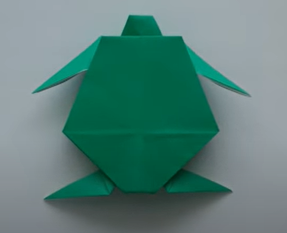

Origami Designs
1. Camel

Facts about Camel
- Camels have three sets of eyelids and two rows of eyelashes to keep sand out of their eyes.
- Thick lips allow them to eat prickly plants easily without hurting themselves.
- Camels can completely shut their nostrils during sandstorms.
- Camels can run 40 miles per hour.
- Camels live 40-50 years
Video tutorial for Camel
2. Rabbit

Facts about Rabbit
- Rabbits are very social creatures that live in groups.
- Like cats, happy rabbits purr when they’re content and relaxed.
- Rabbits are amazing athletes as they can jump as high as 90 centimetres in one leap.
- A female rabbit is called a 'doe' and a male rabbit is called a 'buck'.
- Their vision covers nearly 360 degrees, which allows them to see what's coming from behind them,
above them, and from the sides without turning their heads.
Video tutorial for Rabbit
3. Crab

Facts about Crab
- Crabs can walk in all directions, but they mostly walk and run sideways.
- Crabs are decapods, meaning they have 10 legs.
- The lifespan of a small crab averages around 3-4 years.
- But larger species of crab such as the giant Japanese spider crab can live for 100 years.
- Crabs have a thick external skeleton called an exoskeleton.
Video tutorial for Crab
4. Turtle

Facts about Turtle
- Turtles belong to one of the oldest reptile groups in the world.
- A turtle’s shell is actually part of its skeleton.
- They are cold-blooded creatures and have an incredibly long life span.
- Turtles don't have teeth, they use their beak-like mouth to grasp their food.
- Turtles breathe air and lay their eggs on land, which makes them amniotes.
Video tutorial for Turtle